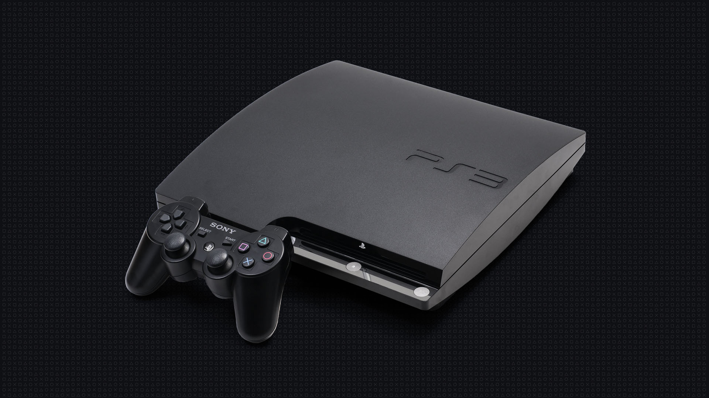

The long awaited PlayStation 3 released on November 11, 2006. The PlayStation3 looked to bring the quality of the PlayStation 2 to the next level, although it had huge expectations that would soon leave some people wanting more. The PS3 (PlayStation 3) did not sell as well as its predecessors, some people believe this is due to the fact that the PS3 had a steep launch price coming at $599. The PS3 did have a great foundation with strong hardware the console ran on, mostly outrivaling everything on the market. But what was most notable about the PlayStation3 was the abundance of games, it was almost as if it had no limit to its amount of games. The console was home to many new franchises such as "The Last of Us", "Infamous", "Demon's Souls" and many other franchises. Although, the PS3 wasn't as well received as the PS2, it was undeniable of the quality of games that came with this consoles era.
